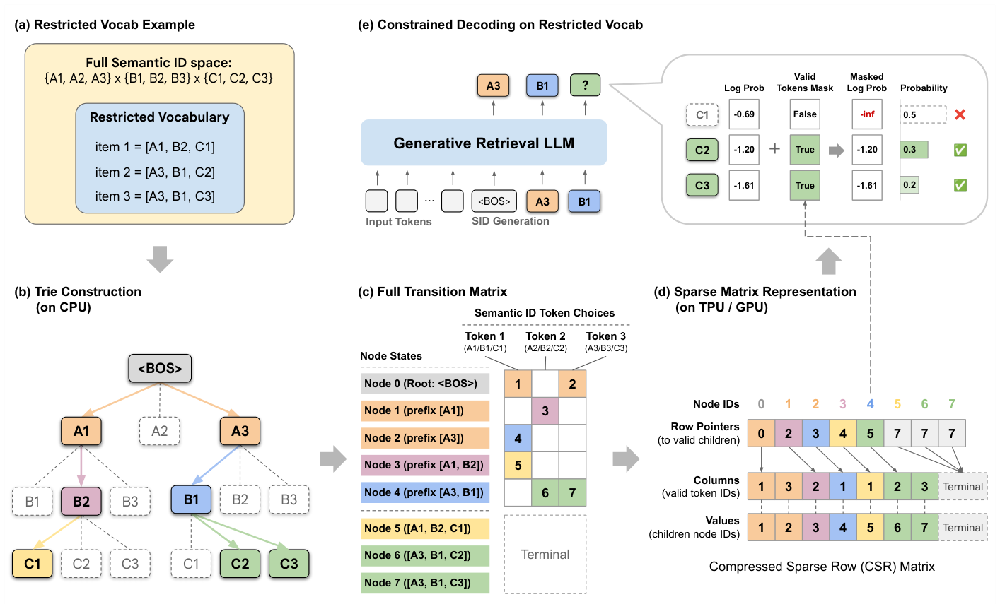

Vectorizing the Trie: Efficient Constrained Decoding for LLM-based Generative Retrieval on Accelerators (向量化前缀树：面向加速器的生成式检索高效约束解码)
- 会议/期刊: KDD 2026 (Camera-ready)
- 作者与机构: Zhengyang Su, Isay Katsman, Yueqi Wang, Ruining He, Lukasz Heldt, Raghunandan Keshavan, Shao-Chuan Wang, Xinyang Yi, Mingyan Gao, Onkar Dalal, Lichan Hong, Ed H. Chi, Ningren Han (Google / Yale University)
- 推荐链路定位: 端到端生成式召回
- 研究方向: 生成式推荐与离散语义ID / 工业级全链路架构
- 论文原文: https://arxiv.org/abs/2602.22647v3
- 开源代码: https://github.com/youtube/static-constraint-decoding
TL;DR (1分钟核心速览)
生成式检索（GR）用 LLM 自回归解码 Semantic ID 召回物品，但工业场景需按业务逻辑（新鲜度、品类、库存）限制输出空间，标准解码无法原生支持；而基于前缀树（Trie）的约束解码在 TPU/GPU 上因指针追逐导致严重延迟（CPU Trie 使推理时间翻倍）。本文提出 STATIC，将前缀树离线展平为静态 CSR 稀疏转移矩阵，把不规则树遍历转为全向量化稀疏算子，I/O 复杂度从 \(O(\log|C|)\) 降至 \(O(1)\)。在 YouTube 20M 约束词表上每步仅增 0.033ms（占推理 0.25%），较 CPU Trie 加速 948×、较硬件二分基线加速 47–1033×，线上 A/B 中 7 日新鲜视频观看 +5.1%。
Background & Motivation (背景与核心矛盾)
- 主流范式: TIGER/PLUM/OneRec 等用 RQ-VAE 将物品量化为分层 Semantic ID，训练 Transformer 自回归逐 token 解码目标物品，绕过双塔 ANN 索引。
- 前人局限: (1) 自回归模型会"幻觉"出下架、过期或违规物品的 SID，后置过滤浪费全部推理预算；(2) 现有 Trie 约束解码依赖指针追逐，随机非连续访存破坏 HBM 合并读取，且数据依赖控制流与 XLA/Inductor 静态图编译范式根本冲突。
- 核心洞察 (Key Insight): 约束词表在 SID 序列空间天然构成前缀树，而树遍历本质是稀疏状态转移——可用线性代数（GraphBLAS 思想）表达，从而复用编译器优化的稠密/稀疏算子。
- 本文切入点: 把"图遍历问题"重铸为"向量化稀疏矩阵运算"，让约束检查完全留在加速器上、无主机-设备往返。
Method (核心方法设计)
1. 整体框架 (Overall Architecture)
离线阶段：给定受限词表 \(\mathcal{C}\subset\mathcal{V}^L\)，在 CPU 上构建前缀树，将每个唯一前缀节点映射为状态整数 \(s\in[S]\)，展平为 CSR 稀疏转移矩阵 \(\mathbf{T}\in\mathbb{Z}^{S\times|\mathcal{V}|}\)（行指针 P、列索引 C、目标状态 V 三数组）。在线解码阶段：每步维护每条 beam 的当前节点向量 \(\mathbf{n}_t\in\mathbb{Z}^{B\times M}\)，前 \(d\) 层（默认 \(d=2\)）用稠密布尔掩码张量 \(\mathbf{D}\) 做 \(O(1)\) 查表，深层用向量化节点转移核 VNTK 从 CSR 中切片取子节点，经 Scatter 生成稠密掩码，将非法 token 的 log-prob 置 \(-\infty\) 后进入 beam search，并 Gather 更新节点状态。
flowchart TD
A["受限词表 C (SID 集合)"] --> B["离线构建前缀树 → CSR 稀疏转移矩阵 T"]
C["LLM 输出 logits L_t"] --> D["LogSoftmax"]
B --> E["前 d 层: 稠密掩码 D 查表"]
B --> F["深层: VNTK 向量化切片 CSR"]
E --> G["Scatter 生成合法掩码 m"]
F --> G
D --> H["Where(m, P, -inf) 掩码"]
G --> H
H --> I["Beam Search 选 Top-M"]
I --> J["Gather 更新 beam 与节点状态 n_t"]
2. 关键设计拆解 (Key Designs)
-
CSR 展平的静态转移矩阵（消除指针追逐）：痛点是指针树访存随机、无法合并读取。核心算子：对状态 \(s\) 取
row_start=P[s]、row_end=P[s+1]，切片C[row_start:row_end]得合法 token、V[row_start:row_end]得后继节点。由于约束词表极稀疏（常 ≤0.01% 合法路径），CSR 内存高效；且采用堆叠 CSR 布局把 token ID 与后继节点打包为 \((N_{edges},2)\) 张量，单次合并读取同时取回两者，随机访存减半。 -
无分支向量化节点转移核 VNTK（适配静态图编译）：痛点是各节点子节点数不一，动态分支在 XLA 触发重编译、在 GPU 引发 warp divergence。核心算子：对第 \(\ell\) 层固定切片长度 \(B_\ell=\max_{n\in N_\ell} b^\ell_n\)（最大分支因子），用
DynamicSlice取定长 \(B_\ell\) 个候选，再用Range(B_ℓ) < N_child生成有效性掩码、Where清洗越界项，最后Scatter投影为稠密布尔掩码。这样把"循环 N 次"的动态控制流变为"取定长 B 再掩码"的静态数据流，整个解码步保持单一静态计算图，算术单元满负荷。 -
训练目标、负采样与推理效率：本文是推理期无损优化，不改变训练目标（标准自回归交叉熵），也不涉及负采样。推理开销：每步仅 +0.033ms（3B 模型推理的 0.25%）；内存约 90MB/百万约束（20M 约束约 1.5GB HBM），可每芯片复制、免跨芯片通信。I/O 复杂度对约束集大小 \(|C|\) 为 \(O(1)\)，对最大分支因子为渐近线性 \(O(B)\)。
Experimental Setup & Evaluation Protocol (实验设置与评估协议)
- 数据集与预处理:
| 数据集 | #Users | #Items | #Interactions | 稀疏度/密度 | 特征/场景说明 |
|---|---|---|---|---|---|
| YouTube 工业语料 | 十亿级 | 1亿–10亿 | — | — | SID: \(L=8\), \(\|\mathcal{V}\|=2048\)；约束集为近 7 日 20M 新鲜视频 |
| Amazon Beauty | — | 1–2万 | — | — | SID: \(L=4\), \(\|\mathcal{V}\|=256\)，RQ-VAE 量化 |
| Amazon Sports | — | 1–2万 | — | — | 同上 |
| Amazon Toys | — | 1–2万 | — | — | 同上 |
- 数据划分与防穿越 (Splitting Strategy): 冷启动实验按物品"年龄"（最老评论时间）将最新 2%/5% 物品划为冷启动集，过滤掉不含冷启动物品的训练序列，在含冷启动目标的测试序列上评估。
- 排名评测协议 (Ranking Protocol): 冷启动用
Full-Ranking（在完整物品语料上 beam search，\(M=20\)），报告 Recall@1；工业侧为线上 A/B 与延迟基准（100 次试验均值）。 - 对比基线与超参设置: 延迟基线含 Unconstrained、CPU Trie、PPV Exact/Approximate、Hash Bitmap；冷启动基线含 Unconstrained、Constrained Random、Dense Retrieval（双塔，128 维，in-batch 对比损失）。工业模型为 3B 稠密 Gemini-based GR，batch=2/chip，beam \(M=70\)，TPU v6e；冷启动模型为 Gemma 1B，batch=16。
Key Experimental Results (实验关键数据)
1. 主实验对比 (Main Results)
表 1：YouTube 20M 约束词表下每解码步延迟开销
| 方法 | 延迟 (ms) | 占推理时间 |
|---|---|---|
| Unconstrained | +0.0 | — |
| PPV Exact | +34.1 | 260% |
| CPU Trie | +31.3 | 239% |
| Hash Bitmap | +12.3 | 94.0% |
| PPV Approximate | +1.56 | 11.9% |
| STATIC (Ours) | +0.033 | 0.25% |
表 2：线上 A/B（"近 7 日"新鲜度约束，Home Feed）
| 指标 | 提升 | 95% 置信区间 |
|---|---|---|
| 7 日新鲜视频观看 | +5.1% | [5.0%, 5.2%] |
| 3 日新鲜视频观看 | +2.9% | [2.8%, 3.0%] |
| CTR | +0.15% | [0.01%, 0.29%] |
| 战略用户群满意度 | +0.15% | [0.03%, 0.27%] |
表 3：Amazon 冷启动 Recall@1 (%)
| 子数据集 | 方法 | 2% 冷启动 | 5% 冷启动 |
|---|---|---|---|
| Beauty | Unconstrained | 0.00 | 0.00 |
| Const. Random | 0.42 | 0.17 | |
| Dense Retrieval | 0.88 | 0.63 | |
| STATIC | 4.29 | 1.60 | |
| Sports | Unconstrained | 0.00 | 0.00 |
| Const. Random | 0.27 | 0.11 | |
| Dense Retrieval | 0.85 | 0.36 | |
| STATIC | 1.24 | 1.17 | |
| Toys | Unconstrained | 0.00 | 0.00 |
| Const. Random | 0.42 | 0.17 | |
| Dense Retrieval | 0.49 | 0.44 | |
| STATIC | 4.39 | 2.25 |
2. 消融实验 (Ablation Study)
本文为系统级优化，无传统模块消融，但通过配置维度扫描验证各设计贡献：
| 配置维度 | 变化范围 | STATIC 延迟 (ms) | 对比基线表现 |
|---|---|---|---|
| 约束集大小 \(\|C\|\) | \(10^5\to10^8\) | 0.023→0.039（近恒定） | PPV Exact 6.4→38.7；CPU Trie 在 \(10^8\) OOM |
| SID 词表 \(\|\mathcal{V}\|\) | 256→32768 | 0.040→0.041（近恒定） | PPV Exact 6.0→578.7；Hash Bitmap 1.55→196.5 |
| 最大分支因子 \(B\) | \(2^1\to2^{18}\) | 渐近线性 \(O(B)\) | — |
| 稠密层数 \(d\) | \(d=2\) vs 纯 CSR | 前两层 \(O(1)\) 查表显著降延迟 | — |
3. 关键实验发现 (Key Findings)
- I/O 复杂度是分水岭：STATIC 对 \(|C|\) 从 \(10^5\) 到 \(10^8\) 延迟几乎不变（0.023→0.039ms），而 PPV Exact 因 \(O(\log|C|)\) 二分从 6.4ms 涨到 38.7ms、CPU Trie 在 \(10^8\) 直接 OOM——证明 \(O(1)\) 合并读取在大词表下是数量级优势。
- 混合稠密+稀疏策略是近恒定扩展的关键：前 \(d=2\) 层用稠密掩码吸收高分支，深层稀疏查找的最大分支因子因 \(|\mathcal{V}|^\ell\) 指数增长而迅速超过 \(|C|\) 保持很小，故对 \(|\mathcal{V}|\) 从 256 到 32768 延迟稳定在 ~0.04ms，而 PPV Exact 暴涨 96×。
- 约束解码本身即冷启动利器：不重训模型、仅将解码限制在冷启动物品集，Beauty/Toys 的 2% 冷启动 Recall@1 从 0 跃至 4.29%/4.39%，约为 Dense Retrieval 的 5–9 倍——说明 GR 的冷启动瓶颈部分源于"模型不会生成未见 SID"，而非表征不足。
Highlights, Limitations & Rating (亮点、对比与审稿评价)
- 与代表作对比 (vs. Prior Work): 相比 DISC-PPV 的扁平排序数组+并行二分（\(O(\log|C|)\) I/O、且仅验 top-50 logits 为近似解），STATIC 用 CSR 稀疏矩阵实现精确且 \(O(1)\) 的约束；相比 CPU Trie 的主机-设备往返（+31.3ms），STATIC 全程留在加速器；相比 FST，避免百万级 SID 词表下的状态爆炸（FST 需 4.96GB vs STATIC 1.5GB）与 XLA 不兼容。
- 可迁移亮点: (1) "树/图结构 → 静态 CSR + 定长切片 + 掩码清洗"的无分支向量化范式，可迁移到任何需在加速器上做结构化约束的解码或检索场景；(2) 用约束解码提升冷启动，是一种零重训的推理期干预技巧。
- 审稿级局限批判: (1) 稀疏转移矩阵目前为离线构建，实时库存/新鲜度变化需重建或重编译，动态更新尚未支持；(2) 冷启动实验仅在 1–2 万物品的 Amazon 子集、\(L=4\) 小规模上验证，向工业十亿级语料的泛化性证据不足；内存随 \(|C|\) 线性增长（~90MB/百万），十亿级约束需分片策略。
- 四维评分: 创新性 ⭐⭐⭐⭐ | 实验扎实度 ⭐⭐⭐⭐⭐ | 方法清晰度 ⭐⭐⭐⭐⭐ | 落地价值 ⭐⭐⭐⭐⭐